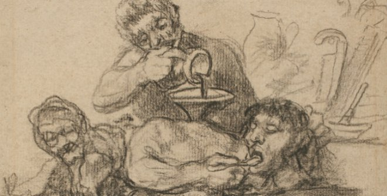
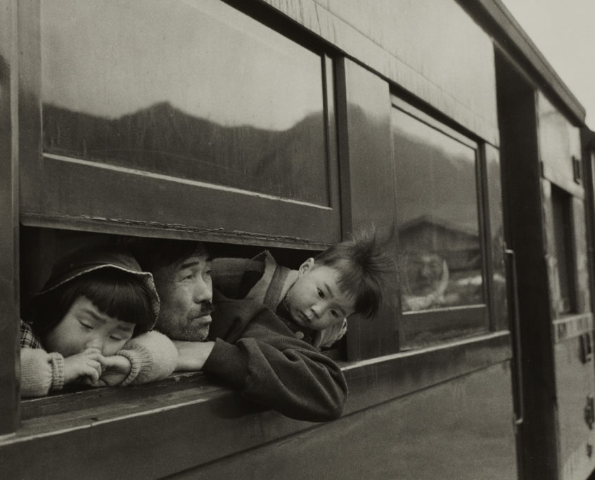
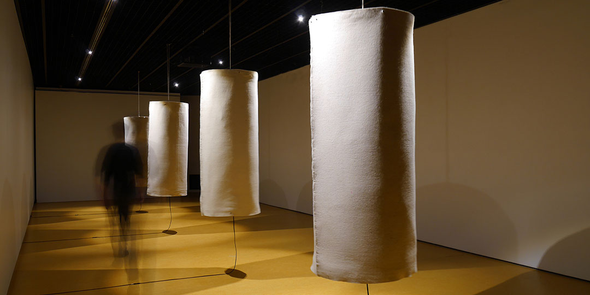
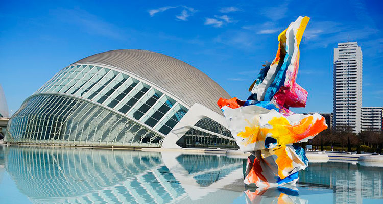

Goya. Dibujos. "Solo la voluntad me sobra"
Museo del prado. 20/11/2019 - 16/02/2020


La mirada de las cosas
Bombas Gens. 22/02/2019 - 02/02/2020
Romper el silencio por Edu Comelles
Ivam Cada Alcoi. 15/11/2019 - 22/03/2020


My Secret Garden Valencia
Ciudad de las Artes y las Ciencias. 7/02/2019 - 29/02/2020